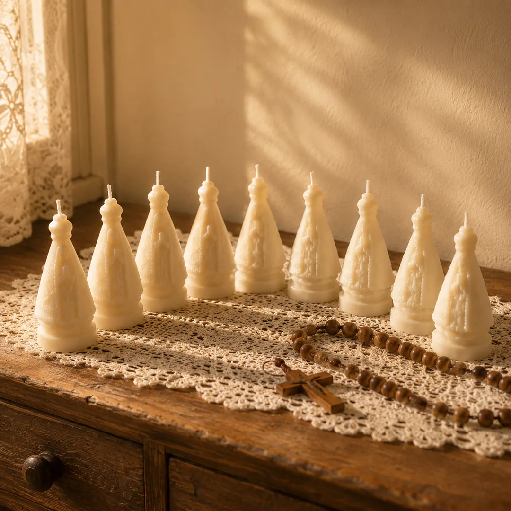

Nove noites · leva 1 minuto
Descubra qual novena foi feita para o que você está carregando agora
Catorze perguntas. No fim, você vai ver com todas as letras o que está travando o seu pedido, e a novena feita exatamente para isso.
Lendo as suas respostas…
Identificando o que se repete no que você respondeu.
O seu resultado
Antes de qualquer coisa, tem uma coisa que você precisa saber
Por que nada do que você tentou resolveu
Agora a boa notícia
Recomendação para o seu caso
Ver a minha novena